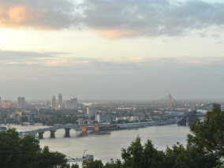
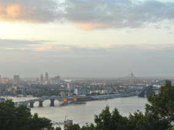
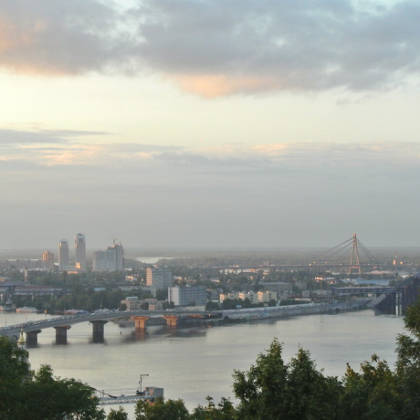
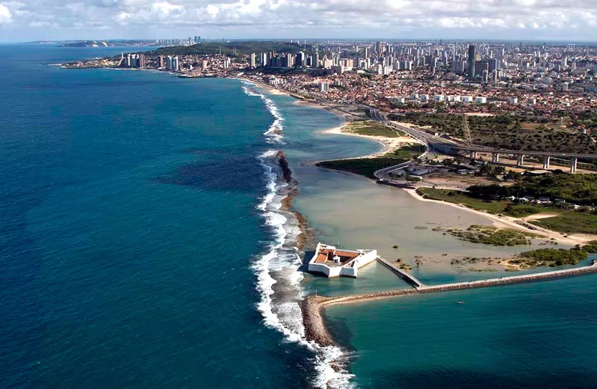

Kiev, Ucrânia
Artista
Natalia Dolgushina, produtora de conteúdo
Kyev(Kiev), capital da Ucrânia, é uma grande cidade localizada as margens do rio Dnipro. È claro que ninguém em sã consciência nadaria no rio, a menos que tenha crescido lá, e nesse caso provavelmente já tentou em algum momento. Os verões são quentes aqui e os invernos são frios, mas o outono e a primavera são incríveis.
Acidade em sí é uma mistura de arquitetura pré-revolução, pós-guerra e soviética , toda ela salpicada da varandas modificadas. Se estiver na margem direita do Dnipro, a paisagem é dificil de percorrer para quem anda de bicileta e quem usa salto. A margem esquerda é considerada muito menos interessante e prestigiosa, mesmo por pessoas que vivem na periferia da margem direita.
Criccieth, País de Gales

Artista
Steffan Warren, editor-chefe
Ksenuya Glagoleva, gerente de projeto
A ruína medieval do Castelo de Criccieth tem vista para a cidade abaixo de uma rocha que se projeta para o mar. Acredita-se que tenha sido construído por Liewelyn , o Grande, no século XIII. Cerca de 900 anos depois, a auto-intitulada *Pérola de Gales nas margens de Snowdonia* tornou-se um destino turístico popular durante os meses do verão.
A uma curta caminhada da estrada do castelo, você pode desfrutar do melhor sorvete do mundo no Cadewalader's, cujo ingrediente secreto, segundo rumores, são algas marinhas de origem local. Outra reivindicação à fama é o fato de que Criccieth ganhou o prêmio *Wales in bloom* por cinco anos consecutivos pr suas espetaculares exibições florais pela cidade. Foi também a casa de David Lloyde George, o único galês a ocupar o cargo de primeiro-ministro do Reino Unido.
Berea, EUA

Artista
Travis Turner, autor e editor
Barea é uma pequena cidade localizada na parte central de Kentucky. A cidade é cercada por belas florestas e campos. É conhecida como a capital do artesanato do estado, e os visitantes encontrarão muitas oportunidades de compras: lojas com bijouterias artesanais, velas, artigos de madeira, galerias, ateliês de vidro, e muito mais. A cidade realiza um festival anual que celebra o "pão de colher"
No entanto, provavelmente é mais conhecido pela faculdade local. O Berea College foi fundado em 1855 e foi o primeiro colégio no sul a ser racialmente integrado, bem como o primeiro a ser misto. De forma um tanto singular, não cobra mensalidades - todo aluno recebe um bolsa de estudos integral.
Muramvya, Burundi

Artista
Grevisse Kenguruka, editor técnico
Muramvya é uma das 18 províncias de Burundi. Na era do reino, Muramvya era a capital real e em 2007, por causa de sua paisagem cultural e natural, foi adicionada à Lista Provisória do Patrimônio Mundial da UNESCO. Está localizada no centro de burundi, entree as capitais políticas e econômicas do país.
O clima é bastante frio à noite, mas durante o dia, você pensaria que está no céu. A 2.665 metros (8.743 pés) acima do nível do mar, o Monte Teza é um dos lugares mais frios da província. Mas essa brisa fresca permite uma das maiores plantações de chá e café do país, que representama a maior parte das exportações do Burundi.
O Parque Nacional de Kibira, uma das maiores reservas de vida selvagem para macacos, se sobrepõe a quatro províncias, incluindo Muramvya. Este parque nacional se encontra no ápice das belas montanhas do Congo-Nile Divide, variando entre 1.550 e 2.660 metros de altitude. Está repleta de uma bela vegetação e fonte par vários rios e riachos que fornecem água em todo o país.
Natal-RN, Brasil
Artista
Flavio Rodrigues, musico amador e profissional de TI
Natal é um município brasileiro, capital do estado do Rio Grande do Norte, na Região Nordeste do país. Com uma área de aproximadamente 167 km², é a segunda capital brasileira com a menor área territorial e a sexta maior capital do país em densidade populacional, distando 2 227 quilômetros de Brasília, a capital federal.
Fundada no Natal de 1599, às margens do Rio Potengi, que separa a Zona Norte das demais, a cidade foi ocupada por holandeses entre 1633 e 1654, período no qual foi denominada de Nova Amsterdã. Seu crescimento foi lento nos três primeiros séculos de existência. Somente a partir do século XX, Natal passou por um intenso processo de modernização e, a partir da Segunda Guerra Mundial, sua população cresceu em um ritmo mais acelerado, especialmente nas décadas de 1970 e 1980.
Sua localização próxima à "esquina da América do Sul" chamou a atenção do Departamento de Guerra do Estados Unidos, que considerou Natal como "um dos quatro pontos mais estratégicos do mundo". Com o início das operações da primeira base de foguetes da América do Sul, no Centro de Lançamento da Barreira do Inferno, em Parnamirim, Natal se tornou a "Capital Espacial do Brasil". ] A construção da Via Costeira, uma rodovia entre o Oceano Atlântico e o Parque das Dunas que interliga as praias de Areia Preta e Ponta Negra, provocou um grande incremento no turismo local.